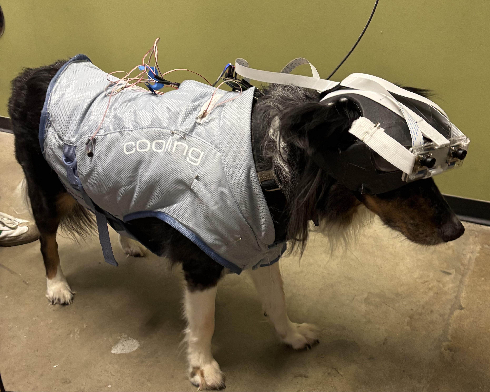

Blind Dog Navigation Aid
Aug '24 - May '25 | ENGI 120 / EDES 200
For the engineering design courses ENGI 120 (Introduction to Engineering Design) and EDES 200 (Engineering Design Studio), my teams and I worked on designing and building a Navigation Aid for a blind dog, Kunde. Our aim was to prevent Kunde's collisions with obstacles, which can lead to injuries, as well as reduce his anxiety in unknown environments, a side effect of not being able to accurately know what's around him. The device also has to be unobtrusive to Kunde's day to day activities.
In the first semester, we settled on a headband-type design that incorporated 3 LiDAR distance sensors with a corresponding vibration motor each. The intensity of the vibration would vary based on the distance of the detected obstacles, with closer obstacles producing stronger vibrations. All of the electronics are controlled by an Arduino nano.
Our design / Image by Ella Lu
I was mostly responsible for the electronic compartments of this project. I conducted functional tests on both the LiDAR sensors and the vibration motors, devising a number of solutions for the motors' connectivity problems.
While testing two of the LiDAR sensors at the same time, I realized the sensors had the same i2C address and therefore could not be used on the same i2C bus. After failing to permanently configure the address (It would reset itself once powered off), I used software i2C to overcome the problem.
After assembling a full electronics prototype on a breadboard, I worked on moving the circuits to something more stable and permanent. Due to the short timeline, we decided to solder the components onto a perf board. To ensure no mistakes were made during the soldering, I designed the layout of the perfboard first, then soldered everything on according to the design.
Final Prototype
With two new members on our team, we decided to redesign our device in the second semester. Our proposed solution features stereoscopic cameras to detect obstacle distances and 8 LRA vibration motors to deliver this information to Kunde. The computation would be done with a Raspberry Pi and a swappable battery would power the whole thing. All of these electrical components will be integrated into a comfortable vest that is easy to take on and off.
New Design for Semester 2
Again, I worked mostly on the electronics, primarily the motors. Since we decided to upgrade the motors to LRA (linear resonance actuators) for better controllability, we had to include a dedicated driver chip for each motor. I designed a PCB (printed circuit board) that included 8 of these drivers. Since these drivers also had the same i2C address, I included an i2C switch on the board so that they can all be controlled by the same bus. I then soldered and connected the motors to our PCB, and wrote the interfacing code required to control the drivers.
PCB and Schematic
Our project was featured on Rice News. See the article here
Our Final Prototype on Kunde